data("chickwts")
plot(weight ~ feed, data = chickwts)
points(weight ~ feed, data = chickwts)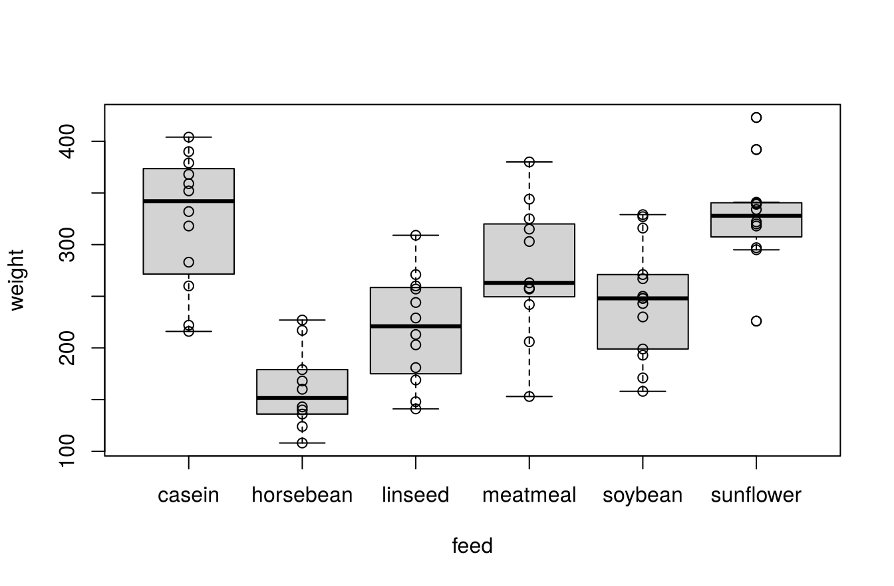
Margin legend
DEF — definition KEY — key idea to remember ↪ — bridge to another day ⚠ — common pitfall
The question of why statistics deserves a substantial investment of time is a legitimate one. A bioinformatics student who can train a random forest on twenty thousand genes in a few lines of code may reasonably ask it. Where that answer remains vague, or reduces to a requirement imposed from outside, this first chapter is intended to supply a better one. The argument is not that statistics is a body of rules to be memorised, but that it arises of necessity whenever a complicated world is described by a simple model.
The entire chapter is organised around one proposition, which is stated here before anything else:
Statistics arises naturally the moment a complicated process is described with a simple model. Reality generates data through mechanisms far too intricate to be written as simple relations. When that machinery is replaced by a crude approximation — a straight line, a group mean — everything the approximation fails to capture is pushed into a single term, the residual. Statistics is the discipline of reasoning about the residuals: how large it is, how it is distributed, and how much it should make us doubt the model. The model itself is partly the hypothesis of interest and partly the semantics of the field in which the question is posed.
Everything that follows — the two worked examples, random variables and distributions, degrees of freedom, and the classical tests — serves to make that sentence precise and usable.
On completing this chapter, the reader should be able to:
The course demands real time and effort, including time spent on scientific programming, and the question therefore deserves a serious answer. Several common answers — that statistics is required, that publication is impossible without it, that it is simply expected — are true but motivate nothing.
The answers worth retaining concern the quality of one’s own reasoning: statistics is learned in order to understand the methodology of empirical science from the inside, to raise the quality, reliability and reproducibility of one’s own research, and to read the literature critically rather than accepting reported p-values on trust.
The last point bears on a claim frequently encountered: that statistics is vague, even among scientists. The position taken in this course is that the vagueness is real but misattributed. It stems overwhelmingly from data quality — outliers, unrepresentative samples, too few observations — and from model misspecification, not from the mathematics or the formal reasoning. Weighing statistical results correctly requires understanding the machinery, which is precisely why relying on a p-value alone is a mistake. The question of whether statistics is vague is revisited at the end of the chapter, once the tools needed to answer it are in place.
We begin with two classical models — an ANOVA and a linear regression. You have probably run both as R functions. The purpose here is to open them up: to see where every number in their output comes from, and to provide two concrete objects in which every concept of this chapter can be located.
An experiment measured the growth of chickens fed six different feed supplements. R ships these data as the chickwts data set. We first inspect the raw data.
data("chickwts")
plot(weight ~ feed, data = chickwts)
points(weight ~ feed, data = chickwts)
The boxes sit at visibly different heights, which suggests that feed matters. A visual impression, however, is not evidence that can be defended; it is subjective. To convert the impression into a claim that is accepted in science, a model is fitted and its variance is analysed.
Model_ANOVA <- lm(weight ~ feed, data = chickwts)
summary.aov(Model_ANOVA)#> Df Sum Sq Mean Sq F value Pr(>F)
#> feed 5 231129 46226 15.37 5.94e-10 ***
#> Residuals 65 195556 3009
#> ---
#> Signif. codes: 0 '***' 0.001 '**' 0.01 '*' 0.05 '.' 0.1 ' ' 1ANOVA stands for ANalysis Of VAriance, and the name expresses the theme of the entire field: statistics analyses the different sources of variation in the data. The table splits the total variation in chicken weight into two accounts. The first row, feed, is the between-feed variation, which the model explains by assigning each feed group its own mean. The second row, Residuals, is the variation the model leaves unexplained — everything driven by processes that were not measured or cannot be controlled, such as the individual bird’s genetics, age, sex, and chance.
The columns should be read from left to right, because each will recur throughout the course.
feed levels the model spends 5 df on the between-feed comparison; the remainder of the sample supplies the residual df.feed effect is large relative to the noise.None of these numbers is mysterious. Write \(y_{ij}\) for chicken \(j\) on feed \(i\), \(\bar y_i\) for the mean of feed \(i\) and \(\bar y\) for the overall mean. The deviation of every chicken from the overall mean splits into two parts,
\[y_{ij} - \bar y = (\bar y_i - \bar y) + (y_{ij} - \bar y_i),\]
and when both sides are squared and summed, the cross-term vanishes, because deviations from a group’s own mean sum to zero within that group. What remains is the identity on which the whole table rests:
\[\underbrace{\sum_{i}\sum_{j} (y_{ij} - \bar y)^2}_{SS_{\text{total}}} = \underbrace{\sum_{i} n_i(\bar y_i - \bar y)^2}_{SS_{\text{between}}} + \underbrace{\sum_{i}\sum_{j} (y_{ij} - \bar y_i)^2}_{SS_{\text{residual}}}.\]
The table can therefore be rebuilt in a few lines.
w <- chickwts$weight
grand <- mean(w) # one mean for all chickens
group <- ave(w, chickwts$feed) # each chicken receives its feed's mean
SS_total <- sum((w - grand)^2)
SS_between <- sum((group - grand)^2)
SS_residual <- sum((w - group)^2)
df_between <- nlevels(chickwts$feed) - 1
df_residual <- length(w) - nlevels(chickwts$feed)
F_value <- (SS_between / df_between) / (SS_residual / df_residual)
c(SS_between = SS_between, SS_residual = SS_residual,
identity_check = SS_total - (SS_between + SS_residual),
F = F_value,
p = pf(F_value, df_between, df_residual, lower.tail = FALSE))#> SS_between SS_residual identity_check F p
#> 2.311292e+05 1.955560e+05 0.000000e+00 1.536480e+01 5.936420e-10The sums of squares, the \(F\) value and the p-value agree with the table, and the identity check is zero up to rounding error.
Here the p-value is approximately \(6\times10^{-10}\): were feed to have no effect, an F value this large would be extremely improbable. The null hypothesis of no feed effect is therefore rejected.
The step just taken deserves scrutiny, because it is the unusual and powerful move at the heart of inference. The p-value is \(P(\text{Data}\mid\text{Hypothesis})\), the probability of data like the observed data if the hypothesis were true. A hypothesis is a proposition about the world that is either true or false. The inference therefore quietly treats
\[P(\text{Data}\mid\text{Hypothesis}) \;\equiv\; P(\text{Fact}\mid\text{Theory}),\]
which holds only if the data faithfully represent the facts. That condition is where statistics acquires its reputation for vagueness. The chain of reasoning is damaged when the data contain outliers, when the sample is not representative of the population of interest, or when there are simply too few observations to decide anything with confidence.
The sub-field that protects this link before any data are collected is Design of Experiments (DOE): using the known behaviour of the test statistics, together with prior estimates of effect size and variance, to determine the sample size that will yield a reliable test — or, run in reverse, the smallest effect a given sample size can detect. It is the subject of Day 2.
We now turn to regression, constructed by simulation so that the model and the noise can be inspected separately. Suppose that chicken weight rose exactly linearly with feed consumed, weight = 150 + 20 × feed, with no other influence.
set.seed(635)
Weight_feed <- round(runif(10, 10, 20), 1)
Intercept <- 150
Slope <- 20
Weight_Chicken <- Intercept + Slope * Weight_feed # y = a + b * x
LR_Data <- data.frame(Weight_Chicken, Weight_feed)plot(Weight_Chicken ~ Weight_feed, cex = 2, data = LR_Data)
abline(lm(Weight_Chicken ~ Weight_feed, data = LR_Data), lwd = 4) # fitted line
abline(150, 20, lty = 2, col = "blue", lwd = 4) # deterministic model line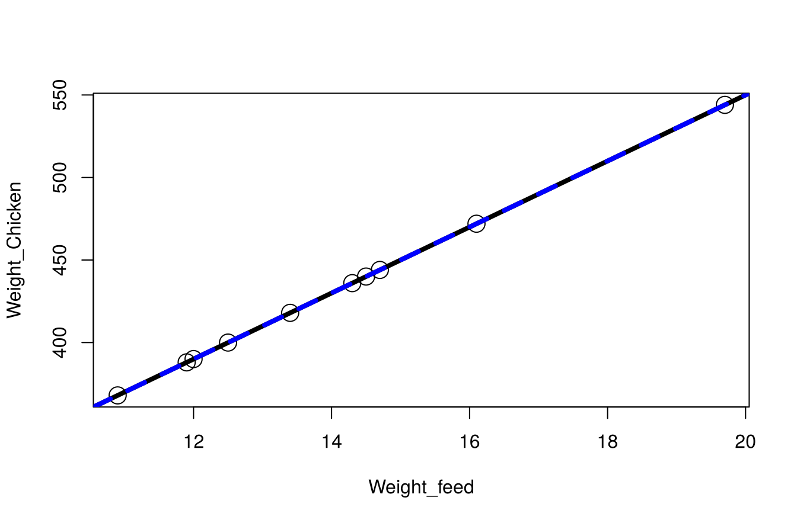
Every point sits exactly on the line, and the fitted (black) and true (blue) lines coincide. This is not a realistic experiment, and the reason it is not is the central point:
Feed alone cannot explain a chicken’s weight. Sex, age, genetics and countless unmeasured factors also push each bird’s weight up or down along the y axe. A realistic data set must carry that additional variation.
The variation is therefore reintroduced as a random term drawn from a normal distribution with mean zero and variance \(\sigma^2\); the drawn values are added to or subtracted from the values on the line. This is the modelling choice that creates statistics: weight is declared to equal a deterministic part that can be written down plus a random residual that can only be described by its distribution.
set.seed(635)
Weight_feed <- round(runif(10, 10, 20), 1)
Intercept <- 150
Slope <- 20
Residual_SD <- 15
Residuals <- rnorm(length(Weight_feed), mean = 0, sd = Residual_SD)
Weight_Chicken <- Intercept + Slope * Weight_feed + round(Residuals, 2)
LR_Data <- data.frame(Weight_Chicken, Weight_feed)
Model_LR <- lm(Weight_Chicken ~ Weight_feed, data = LR_Data)plot(Weight_Chicken ~ Weight_feed, cex = 2, data = LR_Data)
abline(Model_LR, lwd = 4) # fitted line
abline(150, 20, lty = 2, col = "blue", lwd = 4) # true line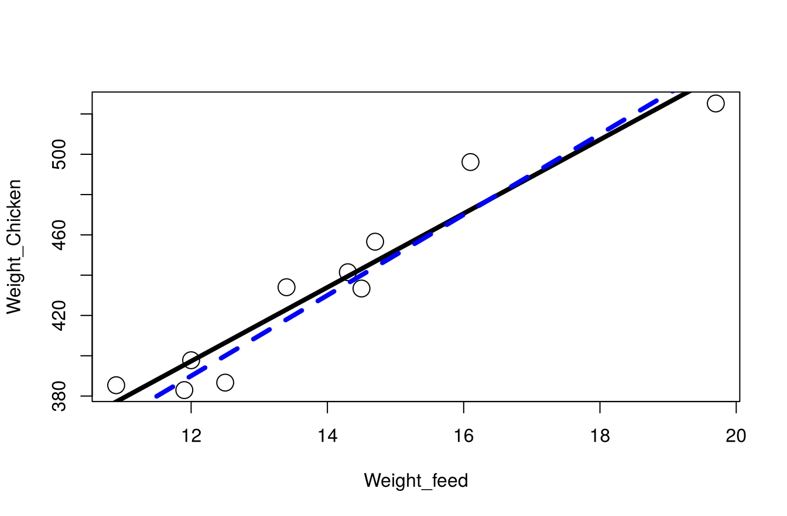
As soon as noise is injected, the fitted line (black) departs from the line that was actually simulated (blue). The regression table expresses the same fact numerically.
summary(Model_LR)#>
#> Call:
#> lm(formula = Weight_Chicken ~ Weight_feed, data = LR_Data)
#>
#> Residuals:
#> Min 1Q Median 3Q Max
#> -19.802 -11.825 1.237 9.431 23.696
#>
#> Coefficients:
#> Estimate Std. Error t value Pr(>|t|)
#> (Intercept) 177.401 26.872 6.602 0.000169 ***
#> Weight_feed 18.326 1.892 9.688 1.07e-05 ***
#> ---
#> Signif. codes: 0 '***' 0.001 '**' 0.01 '*' 0.05 '.' 0.1 ' ' 1
#>
#> Residual standard error: 14.45 on 8 degrees of freedom
#> Multiple R-squared: 0.9215, Adjusted R-squared: 0.9116
#> F-statistic: 93.86 on 1 and 8 DF, p-value: 1.075e-05Because the data were constructed here, the estimates can be checked against the values that were put in.
lm chooses the intercept \(a\) and slope \(b\) that minimise the residual sum of squares,
\[\text{RSS}(a, b) = \sum_{i=1}^n (y_i - a - b\,x_i)^2 .\]
At the minimum both partial derivatives are zero:
\[\frac{\partial\,\text{RSS}}{\partial a} = -2\sum_i (y_i - a - b x_i) = 0, \qquad \frac{\partial\,\text{RSS}}{\partial b} = -2\sum_i x_i\,(y_i - a - b x_i) = 0 .\]
These two normal equations are linear in \(a\) and \(b\). The first gives \(\hat a = \bar y - \hat b\,\bar x\): the fitted line passes through the point of means. Substituting this in the second gives
\[\hat b = \frac{\sum_i (x_i - \bar x)(y_i - \bar y)}{\sum_i (x_i - \bar x)^2} = \frac{S_{xy}}{S_{xx}} .\]
The residual standard deviation is estimated by \(\hat\sigma = \sqrt{\text{RSS}/(n-2)}\), where \(n - 2\) are the residual degrees of freedom, and the standard error of the slope is
\[\text{SE}(\hat b) = \frac{\hat\sigma}{\sqrt{S_{xx}}} .\]
The slope is determined more precisely when the noise is small, and when the \(x\)-values are many or spread widely.
x <- LR_Data$Weight_feed
y <- LR_Data$Weight_Chicken
Sxx <- sum((x - mean(x))^2)
Sxy <- sum((x - mean(x)) * (y - mean(y)))
b_hat <- Sxy / Sxx
a_hat <- mean(y) - b_hat * mean(x)
sigma_hat <- sqrt(sum((y - a_hat - b_hat * x)^2) / (length(y) - 2))
c(intercept = a_hat, slope = b_hat, sigma = sigma_hat,
SE_slope = sigma_hat / sqrt(Sxx))#> intercept slope sigma SE_slope
#> 177.40136 18.32562 14.44995 1.89151Every number agrees with the regression table above.
The decisive question is what would happen if the experiment were repeated — same true line, fresh random residuals. The fitted line would not be the same. Each sample carries only partial information about the population, so each produces a slightly different line. Three fresh samples make this concrete.
set.seed(987)
Weight_feed <- round(runif(10, 10, 20), 1)
Intercept <- 150; Slope <- 20; Residual_SD <- 15
Wc1 <- Intercept + Slope*Weight_feed + round(rnorm(10,0,Residual_SD),2)
Wc2 <- Intercept + Slope*Weight_feed + round(rnorm(10,0,Residual_SD),2)
Wc3 <- Intercept + Slope*Weight_feed + round(rnorm(10,0,Residual_SD),2)
plot(Wc1 ~ Weight_feed, cex = 1, pch = 19, ylab = "Weight_Chicken")
points(Wc2 ~ Weight_feed, pch = 12)
points(Wc3 ~ Weight_feed, pch = 8)
abline(lm(Wc1 ~ Weight_feed), lwd = 2)
abline(lm(Wc2 ~ Weight_feed), lwd = 2)
abline(lm(Wc3 ~ Weight_feed), lwd = 2)
abline(150, 20, lty = 2, col = "blue", lwd = 4)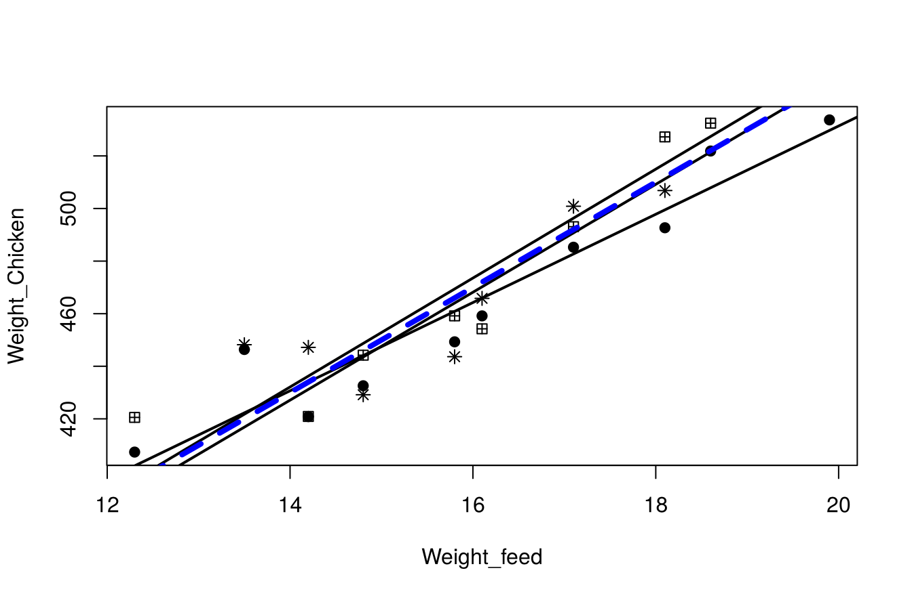
Every line is constrained by its data: new data impose new constraints and yield new estimates. The extent to which the fitted lines scatter around the true one is exactly what the standard error measures. The image of a cloud of plausible lines, all consistent with a true line that cannot be observed, recurs throughout the course.
Three lines give an impression; a thousand give a measurement. The formula above predicts that, with the true \(\sigma = 15\), the slopes should scatter with standard deviation \(\sigma/\sqrt{S_{xx}}\).
set.seed(1)
slopes <- replicate(1000, {
Wc <- Intercept + Slope * Weight_feed + rnorm(10, 0, Residual_SD)
coef(lm(Wc ~ Weight_feed))[2]
})
c(mean_of_slopes = mean(slopes),
sd_of_slopes = sd(slopes),
formula = Residual_SD / sqrt(sum((Weight_feed - mean(Weight_feed))^2)))#> mean_of_slopes sd_of_slopes formula
#> 20.061887 2.121094 2.075263The slopes average to the true value of 20, so the estimator is unbiased, and their standard deviation matches the formula. The standard error printed by summary() is this quantity, estimated from a single sample.
Taken together, the two examples establish the vocabulary of the course. The ANOVA table showed that a statistical analysis is an accounting of variation: a part attributed to the model and a part left in the residual, each with its degrees of freedom, and a test statistic formed from their ratio. The regression showed where the residual comes from — it is the deliberate consequence of replacing a complicated process by a simple line — and that, because the residual is random, the fitted model is itself a random object whose variability across repeated samples is the standard error. Two assumptions were made in passing: that the residuals are random, and that they follow a normal distribution. Both are examined next.
Two things were assumed above without comment: that the residuals are random, and that they follow a normal distribution. Both deserve unpacking, because the choice of distribution is where the model meets the data-generating process.
A random variable is a function that assigns a value — numerical or categorical — to each possible outcome of a random experiment. It captures the different outcomes a random process can produce.
Concretely: one object is selected at random from a well-defined population and some property of it is measured — the height of a random Leiden student, that student’s eye colour, the number of times a finch returns to its nest in a day, whether a species is present at a site. No single draw can be predicted exactly, because different objects give different values. What can be described is the pattern into which the values fall: their distribution.
Plotting 700 simulated student heights makes the pattern visible: dense near 1.80 m and thinning to either side.
set.seed(837)
NORM <- rnorm(700, mean = 1.8, sd = 0.15)
hist(NORM, probability = TRUE, breaks = 30, xlim = c(1.2, 2.4),
col = "lightblue", border = "black",
xlab = "Length (m)", main = "Heights with fitted Normal curve")
x <- seq(1.2, 2.4, length.out = 100)
lines(x, dnorm(x, mean(NORM), sd(NORM)), col = "red", lwd = 2)
points(NORM, rep(0, length(NORM)), pch = "|")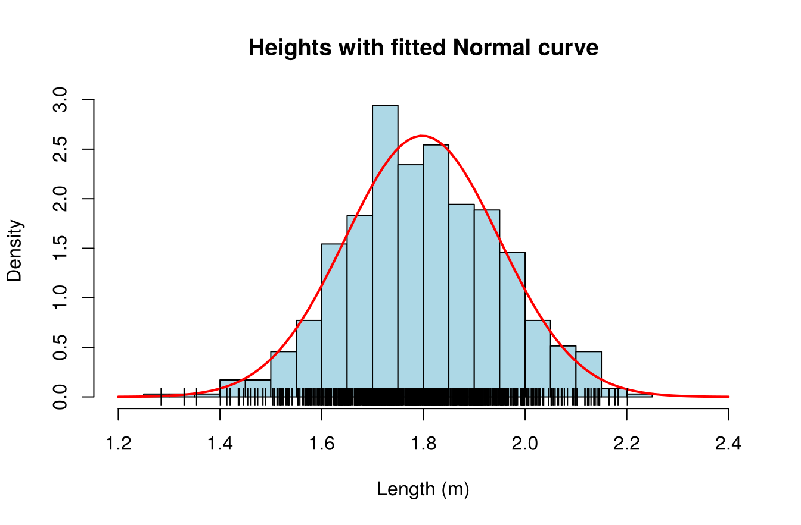
Each bar’s height is the density of observations in that bin. As the bins shrink, the staircase smooths into the familiar bell — the shape a normal distribution predicts.
If data are normally distributed, the entire distribution is determined by two numbers, the mean \(\mu\) and the variance \(\sigma^2\), written \(N(\mu,\sigma^2)\):
\[f(x) = \frac{1}{\sqrt{2\pi\sigma^2}} \, \exp\!\left(-\frac{(x-\mu)^2}{2\sigma^2}\right).\]
The red curve overlaid on the histogram above shows the fit. Visual inspection, however, is not verification. Two standard tools perform the check; we apply them one at a time.
# points on the line => normal with n most extreme points labelled by row number.
car::qqPlot(NORM, id = list(n = 4)) 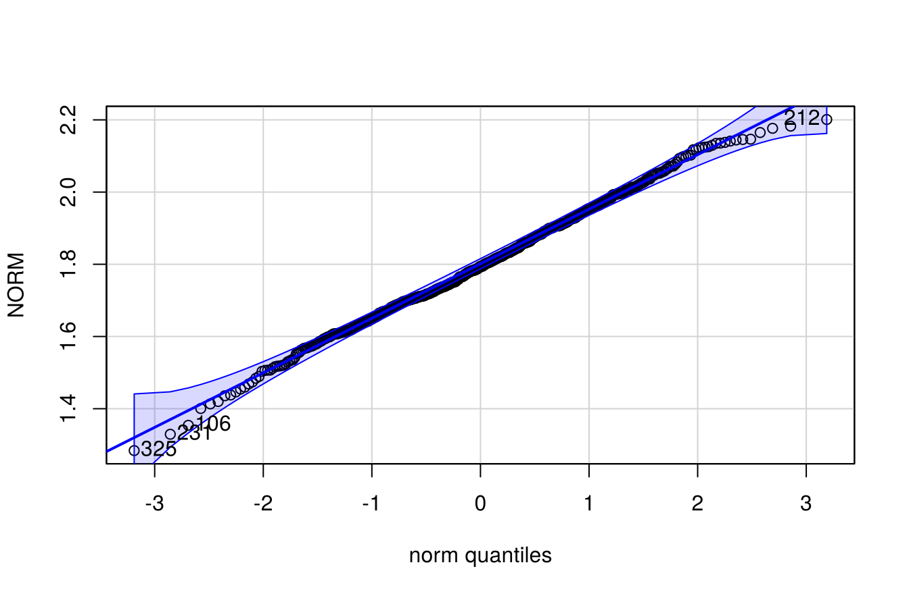
#> [1] 325 231 106 212A Q–Q plot aligns the quantiles of the data against those of a normal distribution; points that follow the line indicate that the data are approximately normal. With 700 observations the points track the line closely and the confidence envelope is narrow.
shapiro.test(NORM) # formal test of normality#>
#> Shapiro-Wilk normality test
#>
#> data: NORM
#> W = 0.9973, p-value = 0.3068The Shapiro–Wilk test formalises the comparison. Its null hypothesis is normality; a large p-value indicates no evidence against it, which is the expected outcome for data simulated from a normal distribution.
The limitation of both tools is sample size. The same procedure is repeated with only 10 observations.
set.seed(837)
NORM10 <- rnorm(10, mean = 1.8, sd = 0.15)car::qqPlot(NORM10, id = list(n = 2))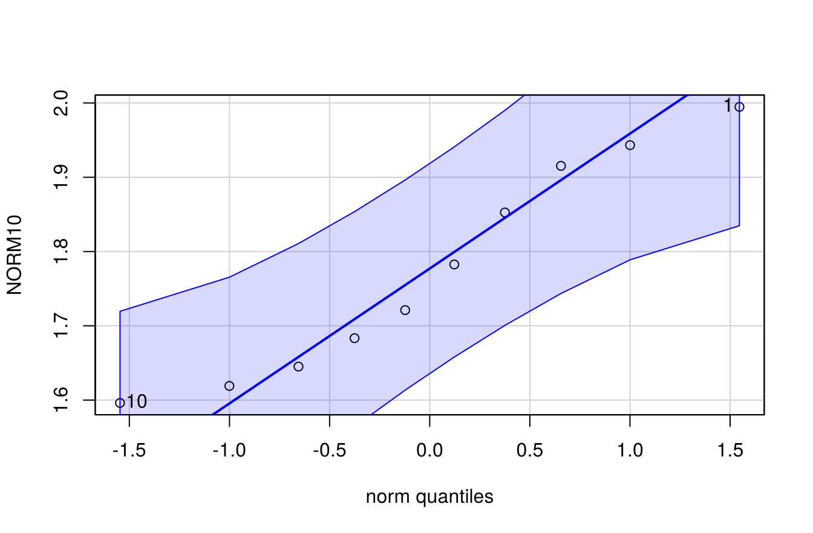
#> [1] 1 10The confidence band of the Q–Q plot has become very wide: with ten points, substantial departures from the line remain compatible with normality, and the plot can neither confirm nor reject it convincingly.
shapiro.test(NORM10)#>
#> Shapiro-Wilk normality test
#>
#> data: NORM10
#> W = 0.92841, p-value = 0.4324The Shapiro–Wilk p-value at \(n = 10\) is unstable; re-running the simulation with fresh data would produce widely varying values; you can do this yourself by copying the code to R. With little data, normality can be neither confirmed nor confidently rejected — a limitation that applies to every distribution considered below, not only this one. It is the same “not enough data” problem that weakened the p-value argument earlier, seen from a different angle.
Different mechanisms generate different distributions, and it is worth knowing the small set on which this course relies. Two questions run beneath this subsection and should be kept separate: what process generates this distribution? and when does it come to resemble the normal? The second question has a single, remarkably general answer.
The normal distribution recurs so persistently not because nature favours bell curves but because of a theorem. A uniform distribution, for instance, arises from a process with equally likely outcomes — a fair die. We examine what happens to the average of 20 rolls, repeated 1000 times.
set.seed(573)
Means <- replicate(1000, mean(sample(1:6, 20, replace = TRUE)))
par(mfrow = c(1, 2)); plot(density(Means)); car::qqPlot(Means); par(mfrow = c(1, 1))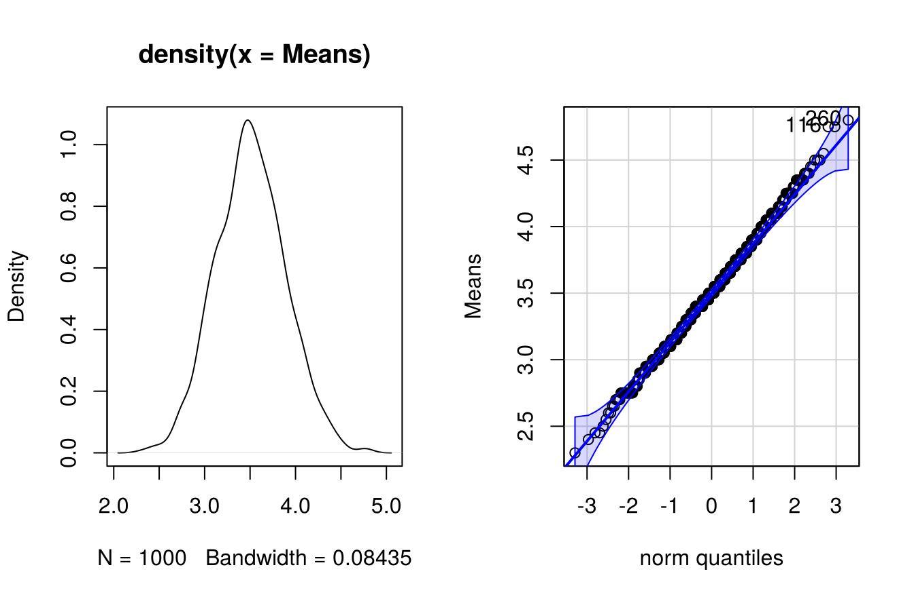
#> [1] 260 116The die distribution is uniform, yet the means accumulate into a bell: the density is symmetric and unimodal (one peak), and the Q–Q plot is nearly straight. This is the Central Limit Theorem in action, and it is one of the main reasons the normal distribution appears so often: whenever a quantity is built by adding many small, approximately independent contributions, it tends to be normally distributed, regardless of how the individual contributions are distributed. It is not the only route to a normal distribution, but it is the one that matters most here, because it is exactly the situation of a residual.
The theorem is quantitative. If single observations have mean \(\mu\) and variance \(\sigma^2\), then for large \(n\)
\[\bar X_n \;\approx\; \mathcal{N}\!\left(\mu,\ \frac{\sigma^2}{n}\right).\]
A fair die has \(\mu = 3.5\) and \(\sigma^2 = 35/12\), so the mean of 20 rolls should have standard deviation \(\sqrt{35/(12 \cdot 20)}\).
c(simulated = sd(Means), predicted = sqrt(35 / 12 / 20))#> simulated predicted
#> 0.3832510 0.3818813The \(\sqrt n\) in the denominator is the same one that appears in every standard error: quadrupling the sample size halves the uncertainty.
This is why the residual term earns its normality assumption. A residual is the sum of many unmeasured influences — genetics, age, micro-environment — so the CLT predicts that it should be roughly normal even though none of those influences was modelled.
This is not an aside; it is the justification for the modelling choice made earlier. When weight was written as deterministic part + normal residual, the residual stood in for a large number of small unmeasured effects added together. The CLT is precisely the theorem stating that such a sum should be approximately normal. The normality assumption on residuals is therefore not wishful thinking but what the CLT leads one to expect. Two conditions govern its applicability: the contributions must be approximately independent, and they must add rather than multiply, with many of them and none dominating. When those conditions fail — correlated effects, or multiplicative ones — normality is exactly what should not be assumed.
A Poisson distribution arises from counting events with no fixed upper limit — finch nest returns in a day, buttercups in a field, labelled cells, transcription events:
\[P(X = k) = \frac{\lambda^k e^{-\lambda}}{k!}.\]
It has a single parameter \(\lambda\), and its defining peculiarity is that its mean and variance both equal \(\lambda\):
\[\mu = \sigma^2 = \lambda.\]
That locked relationship does more work than it appears to. It means a Poisson distribution has no free variance parameter: once the mean is known, the spread is fixed. Real biological counts frequently violate this constraint, their variance exceeding their mean because the model is too simple, and that mismatch, overdispersion, is one of the principal problems any model for count data must address.
The limit that matters for the present argument is the following. As \(\lambda\) grows large, the Poisson approaches a normal distribution; in standardised form,
\[\text{if } X \sim \text{Poisson}(\lambda), \text{ then as } \lambda \to \infty, \quad \frac{X - \lambda}{\sqrt{\lambda}} \;\approx\; \mathcal{N}(0, 1).\]
A Poisson distribution with a large mean is therefore, for practical purposes, a normal distribution with mean and variance both equal to \(\lambda\). This is the CLT in a different guise: a Poisson count can be regarded as a sum of many rare independent events, and sums tend to normality.
A binomial distribution arises from counting successes out of a fixed number of trials — dead or alive in a toxicity assay, present or absent across 24 islands, transcribed or not across 200 cells:
\[P(X = k) = \binom{n}{k} p^k (1-p)^{n-k}, \qquad \mu = np, \quad \sigma^2 = np(1-p).\]
Here \(n\) is fixed by the design of the experiment, so the only free parameter is \(p\), the probability of success. The contrast with the Poisson is instructive: a binomial count cannot exceed \(n\), whereas a Poisson count has no ceiling. Data that look alike as “count data” arise from genuinely different processes, and choosing the appropriate one matters.
The binomial has its own normal limit, again via the CLT (a count of successes is a sum of independent 0/1 trials):
\[\text{for large } n, \quad \frac{X - np}{\sqrt{np(1-p)}} \;\approx\; \mathcal{N}(0, 1).\]
For large \(n\) (and \(p\) not too close to 0 or 1), the binomial too is approximately normal.
Three different generating processes — uniform, unbounded counts, capped counts — and all three drift towards the normal in the limit. That is not a coincidence: the normal, Poisson and binomial all belong to the exponential family of distributions, the mathematical backbone of generalised linear models (GLMs).
The point to carry into the rest of the course, and the reason these distributions were distinguished at all, is the following. It is tempting to argue that, since everything becomes normal eventually, one might always use the normal approximation and fit an ordinary linear model. The answer is that the limit is exactly where real biological data usually are not. Counts are often small. Presence–absence probabilities are often near 0 or 1. Assays have few trials. In all those cases the normal approximation is genuinely wrong: it will predict impossible values (negative counts, probabilities above 1), and it will misstate the variance — because a Poisson’s variance is forced to equal its mean and a binomial’s is \(np(1-p)\), neither of which a normal model knows about.
A GLM does not approximate a Poisson or binomial by a normal. It keeps each response distribution as it is — Poisson, binomial, and so on — and models the mean on a transformed (link) scale. The distributions introduced here are not merely background: each becomes a modelling option in this course. This is why their exact mean–variance relationships are learned rather than dismissed as “roughly normal”.
The distributions surveyed here are therefore exactly the vocabulary required later. The limits (everything tends to normal) explain why classical methods work as well as they do; the differences (Poisson, binomial and normal differ away from the limit) explain why GLMs remain necessary. Day 6 fits such models by maximum likelihood, with logistic regression as the main example.
The section began with two unexamined assumptions — that residuals are random and that they are normal — and has now grounded both. A residual is a random variable because it collects the unmeasured, unpredictable influences on each observation; it is approximately normal because, by the Central Limit Theorem, a sum of many small independent influences tends to normality. The diagnostic tools (Q–Q plot, Shapiro–Wilk) allow the assumption to be checked, but their reliability declines sharply with small samples. Finally, the survey of the Poisson and binomial distributions showed that the normal limit is real but conditional: when counts are small or probabilities extreme, the response must be modelled with its own distribution, which is the motivation for the GLM.
This is the conceptual heart of the chapter, and the idea that connects classical statistics to machine learning. It has the appearance of bookkeeping; it is in fact about how much freedom the data retain once a model has claimed its share of the variance and information.
In general science: degrees of freedom are the number of quantities in a system that can be varied independently without violating a constraint.
In statistics: the data impose the constraints, and \[df_{\text{residual}} = n - df_{\text{model}}.\] The residual degrees of freedom are what remains for the noise after the model has spent its share.
The two definitions appear opposed — one counts the model’s freedom, the other the data’s — but they are two sides of one coin. Every parameter the model is free to choose is a constraint it imposes on the data. The following example makes the exchange concrete.
Ten random numbers between 0 and 10 are drawn, and only the first nine are shown.
set.seed(354)
RV <- round(runif(10, 0, 10), 3)
RV[1:9] # only the first nine are shown#> [1] 4.105 7.607 5.089 5.406 1.550 9.335 8.811 5.900 0.204The tenth value is unknowable from these nine: any value in range is equally possible. Now one extra piece of information is supplied — the mean of all ten.
mean(RV)#> [1] 4.8881Given the mean, the tenth value is fully determined: it must be whatever makes the arithmetic consistent. The forced value is compared with the actual one.
10 * mean(RV) - sum(RV[1:9]) # the forced tenth value#> [1] 0.874RV[10] # the actual tenth value#> [1] 0.874They coincide, as they must. Once the mean is fixed, the tenth number is no longer free. Of ten numbers, only nine can vary. One constraint (the mean) has consumed exactly one degree of freedom.
This is the whole mechanism behind \(df_{\text{residual}} = n - df_{\text{model}}\). The argument is even clearer in reverse: any nine numbers can be chosen and a target mean still attained, provided the tenth is chosen to compensate. The freedom resides in the first nine; the last one pays the bill.
set.seed(988)
Nine <- round(runif(9, 0, 10), 3)
10 * 4.8881 - sum(Nine) # the tenth value that forces the mean to 4.8881#> [1] 4.849The printed value is the single number that, appended to the nine arbitrary values, produces a mean of exactly 4.8881: the constraint determines it completely.
The argument scales up directly. Fitting an ANOVA with six feed groups estimates several group means, and each estimated mean is a constraint that costs a degree of freedom — which is why the residual df is so much smaller than the sample size. At the extreme, if ten observations are split into ten groups of one and ten means are estimated, every value is pinned down. Nothing is free, nothing remains for the residual, and statistical analysis becomes impossible: the data fit perfectly, and uselessly, determined.
That extreme sorts every model into one of three regimes, and the remainder of the course lives in the tension between them:
These three regimes answer both “why not simply add more predictors?” and “why is regularisation (Day 9) needed at all?”. What happens to predictions when the residual degrees of freedom run out, the phenomenon called overfitting, is worked out on Day 6. Here the concern is inference: what the residual degrees of freedom do for the estimate of the noise.
The same accounting is visible geometrically in a straight-line fit, \(y = a + bx\), which has two model degrees of freedom: the intercept \(a\) and the slope \(b\), which can be varied independently.
With one data point (\(n=1 < p=2\)) the model is undetermined. Infinitely many lines pass through a single point, and there is no basis for preferring one.
# One observation: Conc = 0.2, BD = 85.
# Every model BD = a + b*Conc passing through it is equally valid.
# For any chosen slope b, the intercept is forced: a = 85 - b*0.2.
Conc_obs <- 0.2
BD_obs <- 85
slopes <- c(5, 10, 15, 0, -5, -10, 2.5, 7.5, -2.5)
par(mar = c(4, 4, 2, 2))
plot(BD_obs ~ Conc_obs, xlim = c(0, 0.5), ylim = c(82, 90), cex = 3,
pch = 19, col = "green", xlab = "Conc", ylab = "BD")
for (b in slopes) {
a <- BD_obs - b * Conc_obs # intercept forced by the model form
abline(a = a, b = b, lty = 3, lwd = 2)
}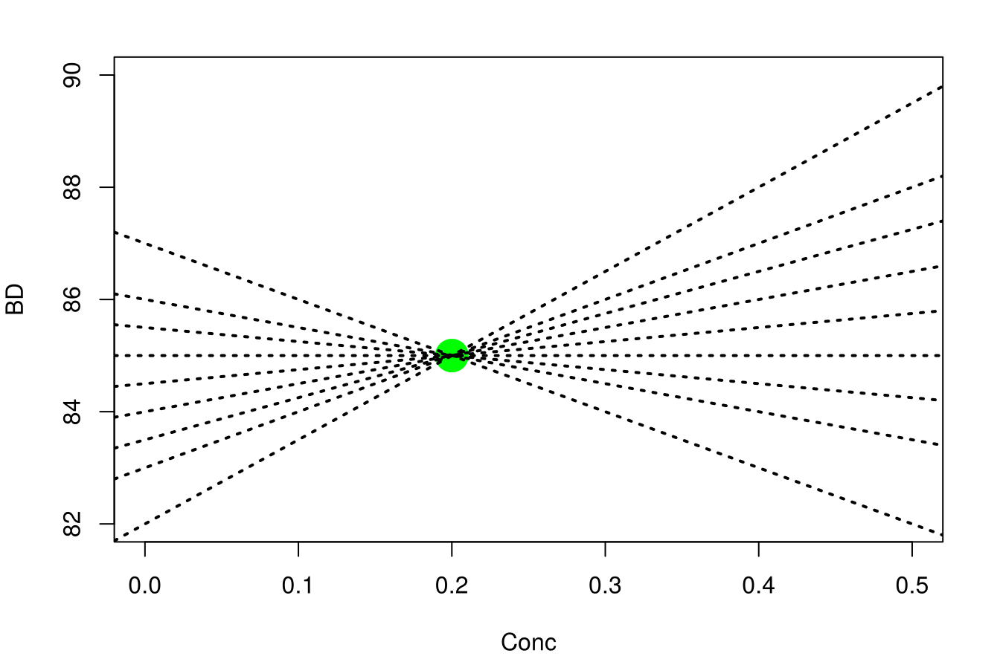
Each dotted line passes exactly through the single observation; the data provide no information to distinguish among them.
With two data points (\(n = p = 2\)) the model is saturated. Two equations in two unknowns have exactly one solution — a single line through both points, a perfect fit with zero residual degrees of freedom. Solving
\[84.5 = a + b(0.1), \qquad 85 = a + b(0.2)\]
gives \(b = 5\) and \(a = 84\), i.e. \(BD = 84 + 5\,\text{Conc}\). The fit is perfect, and precisely because it is perfect it conveys nothing about noise. There is no residual variation to inspect, and hence no way to judge whether the line means anything.
That is the trap of the saturated model. Repeating the two-point “experiment” four times yields four completely different perfect lines.
Conc <- c(0.2, 0.1, 0.4, 0.25, 0.3, 0.15, 0.05, 0.5)
BP <- c(85, 84.5, 86.1, 85.5, 85, 84.1, 84.15, 85.5)
par(mar = c(4, 4, 2, 2))
plot(BP ~ Conc, xlim = c(0, 0.5), ylim = c(82, 90), pch = 19, cex = 3,
main = "Four saturated fits — four different lines")
abline(84, 5, lwd = 3, col = "blue"); abline(84.5, 4, lwd = 3, col = "blue")
abline(83.2, 6, lwd = 3, col = "blue"); abline(84, 3, lwd = 3, col = "blue")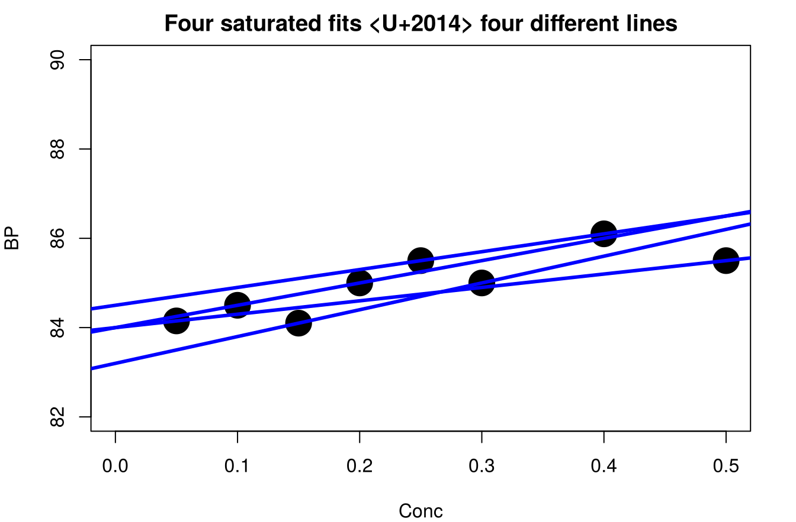
Each line is a flawless fit to its own two points and a useless description of the underlying relationship. A perfect fit with no residual df is not an achievement but a warning.
With more data than parameters (\(n > p\)) a statistical model finally exists. The points no longer fall on any single line, so an exact solution is unavailable; instead \(a\) and \(b\) are estimated by the values that bring the line as close as possible to all points simultaneously. In classical statistics “as close as possible” means minimising the sum of squared residuals, \(\sum_i (y_i - \hat y_i)^2\).
BP <- c(85, 84.5, 86.1, 85.5, 85, 84.1, 84.15, 85.5)
Conc <- c(0.2, 0.1, 0.4, 0.25, 0.3, 0.15, 0.05, 0.5)
plot(BP ~ Conc, xlim = c(0, 0.5), ylim = c(82, 90), cex = 3, pch = 19, col = "green")
Model <- lm(BP ~ Conc)
abline(Model, lwd = 3, col = "blue")
Fit <- fitted(Model)
for (i in seq_along(Fit)) segments(Conc[i], Fit[i], Conc[i], BP[i], col = "red", lwd = 2)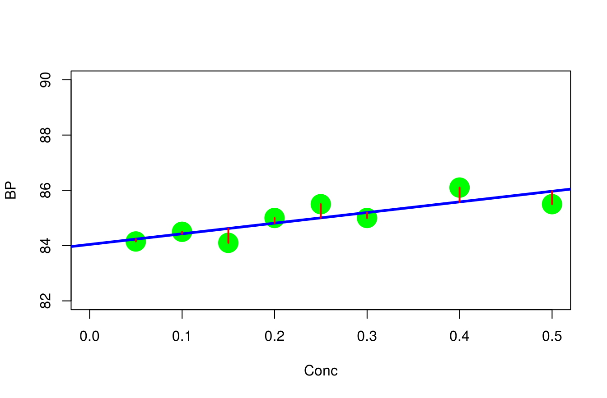
The red segments are the residuals: the part of each observation the model could not reach. With eight points and two parameters the accounts balance as
\[n = df_{\text{model}} + df_{\text{residual}} = 2 + 6 = 8.\]
The subtle consequence, and the point to retain from this chapter, is this. Many different data sets produce the same fitted line. But once the line is fixed by its intercept and slope, the final two observations are no longer free — they are constrained to whatever keeps the fit consistent. This is exactly the ten-numbers-and-a-mean argument in regression form: two parameters estimated means two constraints imposed, which means two of the eight observations cannot be chosen independently. That is why the model “costs” two degrees of freedom. The residual df counts the observations that were genuinely free to be drawn.
A model with more than two predictors — say drug concentration and sex, giving two regression lines — carries four model degrees of freedom, and the same accounting applies.
The six residual degrees of freedom of the eight-point fit are not an accounting curiosity. They are the information from which the noise is estimated. The residual standard deviation is
\[\hat\sigma = \sqrt{\frac{\text{RSS}}{n - p}} = \sqrt{\frac{\sum_i (y_i - \hat y_i)^2}{df_{\text{residual}}}},\]
and every standard error, every \(t\) value and every p-value in a regression table is built on it. Dividing by \(n - p\) rather than by \(n\) corrects for the \(p\) degrees of freedom the fitted line has already consumed: the residuals of a fitted line are systematically smaller than the true residuals, because the line was chosen to make them small.
How reliable is \(\hat\sigma\)? A simulation answers it. Straight lines are fitted, many times, to data with a known residual standard deviation \(\sigma = 1\), for samples that leave 2, 6, 20 or 100 residual degrees of freedom.
set.seed(310)
df_res <- c(2, 6, 20, 100)
sigma_hat <- sapply(df_res, function(d) {
n <- d + 2 # a line has two parameters
x <- seq(0, 1, length.out = n)
replicate(2000, {
y <- 3 + 2 * x + rnorm(n, 0, 1) # true sigma = 1
summary(lm(y ~ x))$sigma
})
})
colnames(sigma_hat) <- paste("df =", df_res)
boxplot(sigma_hat, ylab = expression(hat(sigma)), col = "lightblue",
main = "Estimated residual SD; true value 1")
abline(h = 1, lty = 2, col = "firebrick", lwd = 2)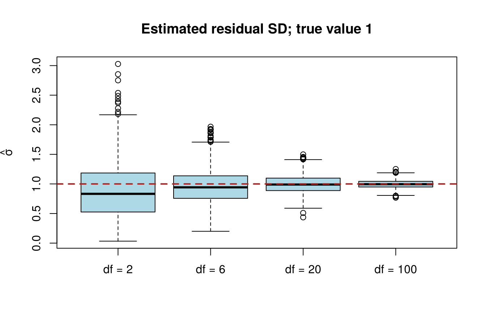
round(rbind(mean_of_sigma2_hat = colMeans(sigma_hat^2),
sd_of_sigma_hat = apply(sigma_hat, 2, sd)), 2)#> df = 2 df = 6 df = 20 df = 100
#> mean_of_sigma2_hat 1.00 0.99 1.01 1.00
#> sd_of_sigma_hat 0.46 0.28 0.16 0.07On average \(\hat\sigma^2\) is correct for every sample size, which is what the division by \(n - p\) achieves. But with two residual degrees of freedom a single estimate can easily be half or twice the true value, and with a hundred it is reliable. The standard error of the slope inherits that uncertainty.
Statistical tests account for this, and that is exactly the role of the degrees of freedom in the \(t\) distribution of the next section: with few residual degrees of freedom its tails are heavier, so a larger \(t\) value is needed before an effect is declared significant.
crit <- c(qt(0.975, df = df_res), qnorm(0.975))
names(crit) <- c(paste("df =", df_res), "normal")
round(crit, 2) # value |t| must exceed for p < 0.05#> df = 2 df = 6 df = 20 df = 100 normal
#> 4.30 2.45 2.09 1.98 1.96With two residual degrees of freedom an estimate must lie more than four standard errors from zero to be significant at the 5 % level; with a hundred, just under two suffice. At zero residual degrees of freedom, the saturated two-point fit, \(\hat\sigma\) cannot be computed at all, and no test exists.
The section has shown, in two settings, that degrees of freedom are the currency in which a model pays for its parameters. In the ten-numbers example, fixing the mean removed the freedom of exactly one value; in the regression example, fixing the intercept and slope removed the freedom of exactly two observations. In both cases the residual degrees of freedom, \(n - df_{\text{model}}\), count the observations that remain informative about the noise. Those residual degrees of freedom are what the noise is estimated from: with few of them, \(\hat\sigma\) is unreliable and tests must demand stronger evidence. When that number reaches zero, as in the saturated two-point fit, the model fits perfectly and says nothing. The three regimes \(n \gg p\), \(n = p\) and \(n \ll p\) are therefore not a technicality: they determine whether classical inference is possible, and they motivate the regularisation methods that appear later in the course.
The introductory course covered these tests; here they are reconnected to the ideas above, because each test is an assumption about the residual distribution in disguise.
The t-statistic compares two treatment means, scaled by their standard error:
\[t = \frac{\bar{x}_1 - \bar{x}_2}{\text{SE}}.\]
The logic deserves to be set out explicitly because it recurs for every test:
x <- seq(-4, 4, length = 1000)
plot(x, dt(x, 4), type = "l", col = "red", lwd = 2, ylim = c(0, 0.4),
main = "t-distributions by degrees of freedom", xlab = "t", ylab = "Density")
lines(x, dt(x, 8), col = "blue", lwd = 2)
lines(x, dt(x, 10), col = "green", lwd = 2)
lines(x, dt(x, 100), col = "purple", lwd = 2)
legend("topright", legend = c("df = 4","df = 8","df = 10","df = 100"),
col = c("red","blue","green","purple"), lwd = 2)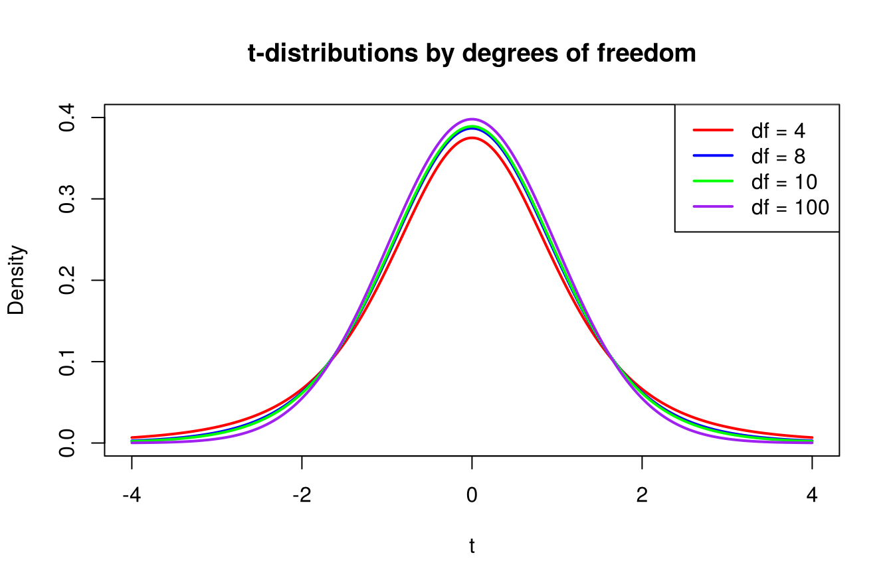
The curves show that the t-distribution with few degrees of freedom has heavier tails than the one with many; at df = 100 it is almost indistinguishable from the standard normal.
That dependence on df is the reason sample size matters for a test: fewer data mean heavier tails and a higher bar to clear. The t-distribution also carries a normality assumption in its construction,
\[t = \frac{\mathcal{N}(0,1)}{\sqrt{\chi^2_{df}/df}},\]
with the \(\chi^2\) itself built from squared normals. Using a t-test therefore commits the analyst to verifying that the data are approximately normal. If they are not, another route to the standard error is required.
When normality cannot be assumed and the standard error therefore cannot be derived analytically, one answer — which returns in force on Day 7 — is the bootstrap: rather than deriving the standard error from theory, it is manufactured by resampling.
The recipe is nearly mechanical. From the \(n\) data points, \(n\) are drawn with replacement, so that some points appear twice and some not at all. The model is refitted. The procedure is repeated many times, yielding a whole distribution of fitted lines.
library(boot)
set.seed(123)
n <- 20
x <- rnorm(n, 5, 2); y <- 2*x + rnorm(n)
data <- data.frame(x, y)
boot_fn <- function(d, i) coef(lm(y ~ x, data = d[i, ]))
boot_results <- boot(data, boot_fn, R = 25)
library(ggplot2)
p <- ggplot(data, aes(x, y)) +
geom_point() +
geom_smooth(method = "lm", se = TRUE, color = "blue", linewidth = 1.5) +
theme_minimal() +
labs(title = "Regression with bootstrap resample lines")
for (i in seq_len(nrow(boot_results$t)))
p <- p + geom_abline(intercept = boot_results$t[i, 1],
slope = boot_results$t[i, 2],
color = "red", alpha = 0.3)
p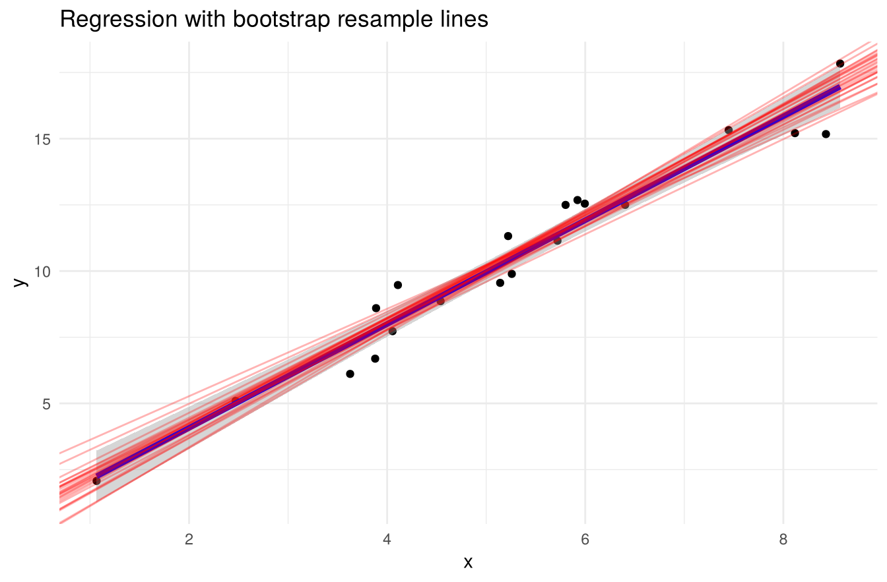
The red lines are the 25 bootstrap refits; their spread around the blue least-squares line is a direct picture of the uncertainty in the intercept and slope. The essential point is that the standard deviation of the bootstrap slopes and intercepts is their standard error, with no distributional assumption required. It is the same cloud of plausible lines from the first example, except that the cloud has now been built by resampling rather than by theory. The same idea, letting the data themselves stand in for repeated experiments, underlies cross-validation later in the course.
The F-test compares two variances and shares the t-test’s dependence on normality: an F-distribution is the ratio of two variances; variances of normal data are \(\chi^2\)-distributed; hence an F statistic is a ratio \(\chi^2_{df_1}/\chi^2_{df_2}\), each scaled by its df:
\[F = \frac{\chi^2_{df_1}/df_1}{\chi^2_{df_2}/df_2}.\]
The statistic has already appeared twice: as the last column of the ANOVA table (explained mean square over residual mean square) and at the foot of the regression summary. Both are the same object — a signal-to-noise ratio judged against the F-distribution selected by its degrees of freedom. Being able to explain why the same statistic appears in both places is a good test of whether this chapter has been understood.
The t-test, the ANOVA and the regression are not three methods. With two groups they are the same model, and their statistics are tied by \(F = t^2\).
two <- droplevels(subset(chickwts, feed %in% c("casein", "horsebean")))
tt <- t.test(weight ~ feed, data = two, var.equal = TRUE)
fit2 <- lm(weight ~ feed, data = two)
c(t_from_t.test = unname(tt$statistic),
t_from_lm = summary(fit2)$coefficients[2, 3],
F_from_anova = anova(fit2)[1, 4],
t_squared = unname(tt$statistic)^2)#> t_from_t.test t_from_lm F_from_anova t_squared
#> 7.019741 -7.019741 49.276764 49.276764The two t-values differ only in sign, which depends on which group is subtracted from which. The reason for the agreement is visible in what lm actually fits. A categorical predictor is turned into a column of zeros and ones:
model.matrix(fit2)[c(1, 2, 11, 12), ]#> (Intercept) feedhorsebean
#> 1 1 1
#> 2 1 1
#> 60 1 0
#> 61 1 0The first column is the intercept, the second says “this chicken was fed horsebean”. The model is \(\mathbf{y} = \mathbf{X}\boldsymbol\beta + \boldsymbol\varepsilon\) whatever mix of continuous and categorical predictors the matrix \(\mathbf{X}\) contains; the coefficient of the second column is the difference between the two group means.
lm workflow.Bioinformatics adds a problem that a single experiment does not have. An expression study tests every gene. Suppose 10,000 genes are measured in two groups of five samples and no gene differs at all.
set.seed(2026)
m <- 10000
n_per <- 5
expr <- matrix(rnorm(m * 2 * n_per), nrow = m) # rows are genes; no real differences
A <- expr[, 1:n_per]
B <- expr[, n_per + 1:n_per]
# a two-sample t-test for every gene at once
s2 <- (apply(A, 1, var) + apply(B, 1, var)) / 2
tstat <- (rowMeans(A) - rowMeans(B)) / sqrt(s2 * 2 / n_per)
pval <- 2 * pt(-abs(tstat), df = 2 * n_per - 2)
hist(pval, breaks = 20, col = "lightblue", main = "",
xlab = "p-value (no gene truly differs)")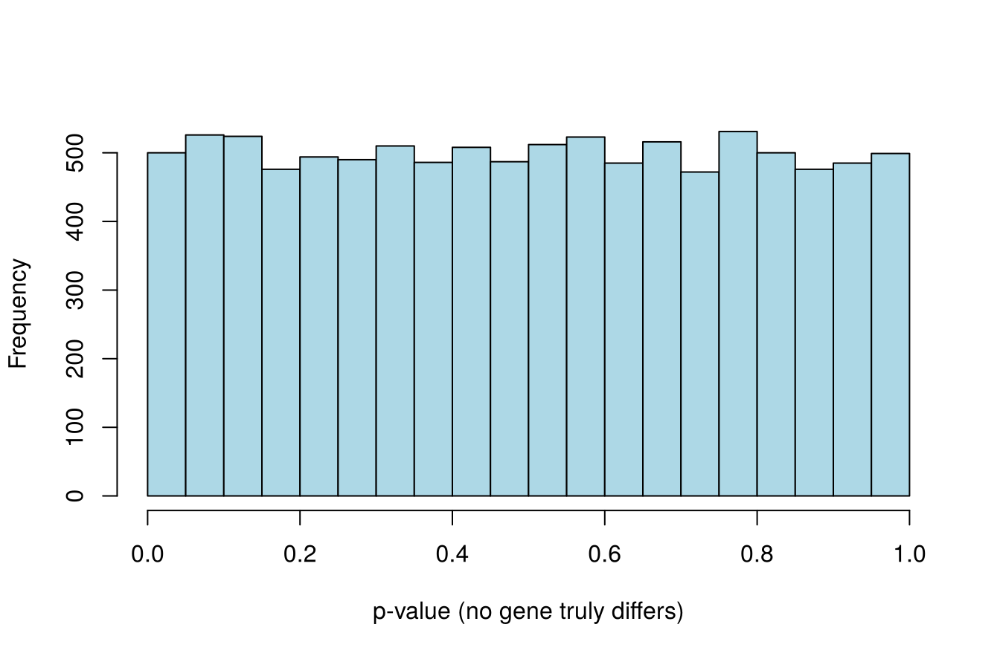
The histogram is flat, and that is a theorem, not an accident: when the null hypothesis is true, a p-value is uniformly distributed between 0 and 1, because \(P(p \le u) = u\) is precisely what a p-value is constructed to satisfy. Testing \(m\) true null hypotheses at level \(\alpha\) therefore yields about \(\alpha m\) “significant” results.
c(significant_at_0.05 = sum(pval < 0.05),
expected = 0.05 * m,
bonferroni = sum(pval < 0.05 / m),
benjamini_hochberg = sum(p.adjust(pval, method = "BH") < 0.05))#> significant_at_0.05 expected bonferroni benjamini_hochberg
#> 500 500 0 0Roughly five hundred genes pass the uncorrected threshold although none differs. The two standard corrections remove them. Bonferroni guards against even a single false positive and is strict; the Benjamini–Hochberg procedure accepts that a controlled fraction of the discoveries is false and is the usual choice in genomics. Either way, a p-value means nothing until one knows how many tests were run.
Each classical test follows the same construction: a statistic is formed from the data, the statistic is itself a random variable, and its distribution — t, F, \(\chi^2\) — is known only under the assumption that the residuals are normal and the observations independent. The degrees of freedom of that distribution are the residual degrees of freedom of the model, which is why the sample size and the number of parameters control how demanding a test is. When the normality assumption cannot be sustained, the bootstrap replaces the theoretical distribution with an empirical one obtained by resampling, provided that the resampling respects the independence structure of the data.
The question posed at the outset can now be answered. The mathematics is not vague: given clean data and a verified residual assumption, the machinery delivers exactly what it promises. What is fragile is the bridge from data to facts — \(P(\text{Data}\mid H) \equiv P(\text{Fact}\mid H)\) — and everything in this chapter has concerned the load-bearing elements of that bridge:
Statistics appears vague only when these elements are skipped and a p-value is reported as though it were a fact. The rest of this course is, in effect, a survey of what to do when the simplest assumptions do not hold — confounded or dependent observations (Days 2 and 7), responses that are not normal (Day 6), and above all the \(n \ll p\) world in which bioinformatics lives (Days 4 to 11). Each is a variation on the single idea with which the chapter began: build a crude model, and take the residuals seriously.
The practicals of this course repeatedly ask for data to be simulated and then analysed. This is not a formality; it is the most transparent way to understand a model, because the true intercept, slope and residual distribution are set by the analyst, after which the analysis can be observed recovering some quantities and missing others. Every simulation in this chapter — the drifting regression line, the three resampled fits, the ten numbers and their mean — is a miniature version of exactly that exercise. When constructing a simulation, the two questions that run through the whole chapter should be kept in view: how much of the variation belongs to the deterministic model and how much to the residual, and has the residual been verified to behave as assumed?
| Topic | ISLR |
|---|---|
| What statistical learning is; flexibility against accuracy | §2.1, §2.2 |
| Simple and multiple linear regression | §3.1, §3.2 |
| Hypothesis tests and multiple testing | §13.1 to §13.4 |